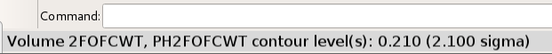
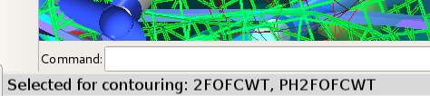

Visualisation and Navigation¶
(NOTE: if you’re viewing this from within ChimeraX, you may prefer using one of the the interactive introductory Tutorials to acquaint yourself with ISOLDE’s controls.)
General layout¶
After loading a model and map (see Preparing a model for simulation), your ChimeraX display should look something like the screenshot below.
A typical ISOLDE scene. The default background colour in ChimeraX is black
like in this image, but personally I prefer white and will be using it for
most of this tutorial. You can change background colour to black, white or
grey using the square buttons near the middle of the ChimeraX display
toolbar (top of the ChimeraX window), or set bgColor <color> in the
ChimeraX command line if you’re feeling adventurous.¶
(Helpful hint: display of hydrogen atoms can be adjusted to your preference at
any time using the show and hide commands. For example,
show H will show all hydrogens, and hide HC will hide only non-polar
hydrogens.)
First, let’s talk about what’s changed in the model itself. Perhaps most immediately obvious is the change in the appearance of the cartoon: it’s now much thinner than you’re probably used to seeing. This is to ensure that it doesn’t get in the way of seeing the atoms themselves, while still providing valuable information about overall topology and secondary structure.
Next (if you’re working with a crystal structure) you might notice that your model has been joined by one or more darker copies of itself. These are the symmetry contacts in the crystal lattice. The symmetry atoms are non-interactive “ghosts” - while they will update instantly when the “real” atoms change, you cannot select or move them, and they won’t contribute to simulations. However, you can still do useful things with them. Hovering your mouse over one will give you a popup telling you its name and symmetry operator:

Symmetry atoms know who they are¶
... while double-clicking one will re-centre the view on its equivalent atom in the “real” model.
You’ll also note that you can no longer see all of the atoms (nor all of the map). By default atom display is restricted to residues approaching within 16Å of the central pivot point, while the map is restricted to a 13Å sphere. You can adjust the display radius at any time using the “Mask and Spotlight Settings” widget on ISOLDE’s General tab:
... or using the command clipper spotlight radius {value in Angstroms}.
Other display options suited to isolating issues in low-resolution maps will be
discussed below.
Zooming and Panning¶
Just like in the rest of ChimeraX, you can zoom in and out using your mouse scroll wheel. There is, however, one key difference: you will find now that the front and rear clipping planes move closer together when zooming in, and further apart when zooming out. Where the standard ChimeraX zoom mode looks at the molecule from outside (akin to looking through an ultra-powerful microscope), this mode is designed to bring you inside the molecule to better focus on the atomic details. You can adjust the distance between the clipping planes with shift-scroll. Panning (that is, translating the display up-down and left-right) is the ChimeraX standard middle-click-and-drag.
Adjusting the maps¶
Adjusting map contour levels is done using alt-scroll. The current contour level along with the map being adjusted will appear in the status bar:
To choose which map is re-contoured by scrolling, use ctrl-scroll. This will cycle through the available maps, selecting (i.e. highlighting in green) the current choice in the GUI window and showing its name in the status bar:
The last chosen map will be remembered for contouring purposes until the next use of ctrl-scroll.
Options for visualisation of individual maps are available via the Dynamic Crystallographic Map Settings, Precalculated Crystallographic Map Settings, and Non-crystallographic Map Settings widgets on ISOLDE’s General tab. These widgets are very similar to each other; we’ll just use the dynamic maps version for illustration here.
Column |
Function |
|---|---|
Name |
|
ID |
|
Live? |
|
Show |
Controls the visibility of each map. |
Style |
|
Colour |
|
Diff map? |
|
MDFF? |
|
Weight |
|
{kind=link}
{kind=link}
{kind=link}
Selecting atoms¶
While ISOLDE is running, it makes a few changes to how mouse-based selection works. Specifically, only atoms in ISOLDE’s current working model will be mouse-selectable. Further, while a simulation is running only the mobile atoms will be mouse-selectable. Other than that, behaviour is quite similar to standard ChimeraX:
ctrl-click (and drag): select an atom (group of atoms), discarding any previous selection. Modifiers:
shift : next selection adds to any existing selection
alt : next selection is subtracted from any existing selection.
A very useful built-in ChimeraX feature allows you to grow and shrink your selection using the keyboard. With some atoms selected, up arrow will expand it first to whole residues, then to whole secondary structure elements, then whole chains, then the whole model. Down arrow will progressively roll back previous up arrow presses. I highly recommend familiarising yourself with how this works.